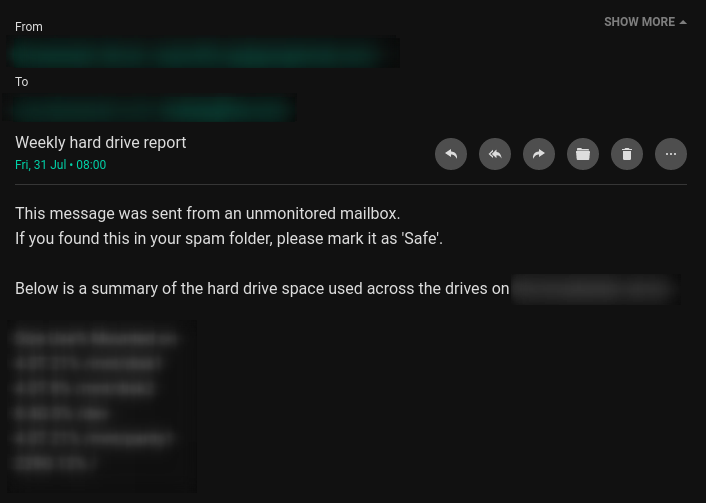

| 2020-06-11 | Menu |
|---|
This is how I got ssmtp to send emails through my Gmail account to myself using my server. The emails are mainly alerts e.g. "Hard drive report", "Failed to updated DNS records", "Failed to sync RAID arrays"
My server uses apt so installing it was like this: sudo apt install ssmtp
This is roughly what my /etc/ssmtp/ssmtp.conf looks like:
#
# Config file for sSMTP sendmail
#
UseSTARTTLS=YES
# allow people to override the FROM line so
# the email can appear as if it came from anyone
FromLineOverride=YES
root=<me>@googlemail.com
mailhub=smtp.gmail.com:587
AuthUser=<me>@googlemail.com
AuthPass=<app_password_here>The AuthPass can't be your actual password if you're using MFA; you have to make an app password. See this guide by Google.
Then you just have to use the following command to send an email
sudo sendmail email@abc.com <<< "text"
sudo sendmail email@abc.com,email2@abc.com < /path/to/file.htmlThis is a snippet from the send_mail.sh on my server:
#!/bin/bash
local FROM
FROM=$(grep AuthUser /etc/ssmtp/ssmtp.conf | sed "s/.*=//g")
log "Email will send from $FROM"
{
echo "To: $(join_by ',' "${MAIL_ALERT_RECIPIENTS[@]}")"
echo "From: Big Boy Server <$FROM>"
echo "Subject: $1"
echo ""
echo "$2"
} \
| /sbin/ssmtp -tThe $MAIL_ALERT_RECIPIENTS variable is sourced in from a different file. The parameters $1 and $2 are passed in by whatever script is sending the alert. The first parameter is the email subject and the second is the body of the email.
This is what the emails look like when they reach your inbox.
